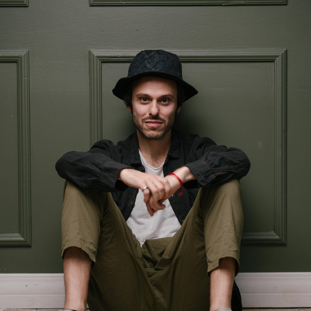
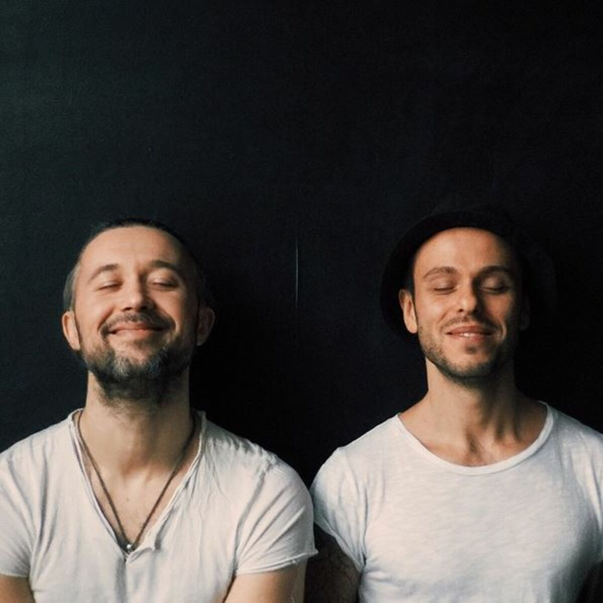
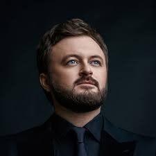

UKRAINIAN MUSIC ARTISTS
|
SunSay

Андрій Миколайович Запорожець (Sun) (5 вересня 1979, Харків, Українська РСР) — співак з України, виконавець музики в стилях ф'южн, фанк і регі. Лідер рок-гурту «SunSay».Гурт заснував у 2007 році колишній вокаліст «5'nizza» Андрій Запорожець. Початково репертуаром гурту був перероблений матеріал третього невиданого альбому «5'nizz-і». Слухати тут |
5'nizza

Гурт із Харкова, що існував з 2000 по 2007 рік, у 2015 році відновив виступи. Завдяки своєму незвичному підходу до вигадування та виконання музики гурт здобув велику популярність у багатьох країнах Східної Європи, зокрема у Польщі, Росії та Болгарії.Гурт виконує власні пісні, в яких змішуються такі стилі як регі, реп, фанк, рок, ска.Складається з двох учасників: Андрій Запорожець («Сан») — вокал Сергій Бабкін («БатькоРідНий») — вокал, акустична гітара, імітує голосом різні музичні інструменти та звуки, human beatbox Слухати тут |
|
DZIDZIO

Український попгурт, створений у 2009 році за задумом і за підтримки Андрія Кузьменка та Олега Турка, на основі образу головного героя гурту, комедійного персонажа Дзідзя, придуманого Михайлом Хомою.Виступає в жанрі «комедійного антигламурного попу». На додачу до літературної української, у своїх піснях також використовує діалект. Слухати тут |